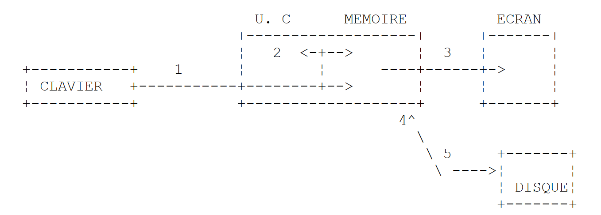

2. Les bases du langage VB.NET
2.1. Introduction
Nous traitons VB.NET d'abord comme un langage de programmation classique. Nous aborderons les objets ultérieurement.
Dans un programme on trouve deux choses
- des données
- les instructions qui les manipulent
On s'efforce généralement de séparer les données des instructions :
 |
2.2. Les données de VB.NET
VB.NET utilise les types de données suivants:
- les nombres entiers, réels et décimaux
- les caractères et chaînes de caractères
- les booléens
- les dates
- les objets
2.2.1. Les types de données prédéfinis
Type VB | Type .NET équivalent | Taille | Plage de valeurs |
Boolean | System.Boolean | 2 octets | True ou False. |
Byte | System.Byte | 1 octet | 0 à 255 (non signés). |
Char | System.Char | 2 octets | 0 à 65 535 (non signés). |
Date | System.DateTime | 8 octets | 0:00:00 le 1er janvier 0001 à 23:59:59 le 31 décembre 9999. |
Decimal | System.Decimal | 16 octets | 0 à +/-79 228 162 514 264 337 593 543 950 335 sans décimale ; 0 à +/-7,9228162514264337593543950335 avec 28 décimales ; le plus petit nombre différent de zéro étant +/-0,0000000000000000000000000001 (+/-1E-28). |
Double | System.Double | 8 octets | -1,79769313486231E+308 à -4,94065645841247E-324 pour les valeurs négatives ; 4,94065645841247E-324 à 1,79769313486231E+308 pour les valeurs positives. |
Integer | System.Int32 | 4 octets | -2 147 483 648 à 2 147 483 647. |
Long | System.Int64 | 8 octets | -9 223 372 036 854 775 808 à 9 223 372 036 854 775 807. |
Object | System.Object | 4 octets | N'importe quel type peut être stocké dans une variable de type Object. |
Short | System.Int16 | 2 octets | -32 768 à 32 767. |
Single | System.Single | 4 octets | -3,402823E+38 à -1,401298E-45 pour les valeurs négatives ; 1,401298E-45 à 3,402823E+38 pour les valeurs positives. |
String | System.String (classe) | 0 à environ 2 milliards de caractères Unicode. |
Dans le tableau ci-dessus, on découvre qu'il y a deux types possibles pour un entier sur 32 bits : Integer et System.Int32. Les deux types sont interchangeables. Il en est de même pour les autres types VB et leurs équivalents dans la plate-forme .NET. Voici un exemple de programme :
Module types
Sub Main()
' nombres entiers
Dim var1 As Integer = 100
Dim var2 As Long = 10000000000L
Dim var3 As Byte = 100
Dim var4 As Short = 4
' nombres réels
Dim var5 As Decimal = 4.56789D
Dim var6 As Double = 3.4
Dim var7 As Single = -0.000103F
' date
Dim var8 As Date = New Date(2003, 1, 1, 12, 8, 4)
' booléen
Dim var9 As Boolean = True
' caractère
Dim var10 As Char = "A"c
' chaîne de caractères
Dim var11 As String = "abcde"
' objet
Dim var12 As Object = New Object
' affichages
Console.Out.WriteLine("var1=" + var1.ToString)
Console.Out.WriteLine("var2=" + var2.ToString)
Console.Out.WriteLine("var3=" + var3.ToString)
Console.Out.WriteLine("var4=" + var4.ToString)
Console.Out.WriteLine("var5=" + var5.ToString)
Console.Out.WriteLine("var6=" + var6.ToString)
Console.Out.WriteLine("var7=" + var7.ToString)
Console.Out.WriteLine("var8=" + var8.ToString)
Console.Out.WriteLine("var9=" + var9.ToString)
Console.Out.WriteLine("var10=" + var10)
Console.Out.WriteLine("var11=" + var11)
Console.Out.WriteLine("var12=" + var12.ToString)
End Sub
End Module
L'exécution donne les résultats suivants :
var1=100
var2=10000000000
var3=100
var4=4
var5=4,56789
var6=3,4
var7=-0,000103
var8=01/01/2003 12:08:04
var9=True
var10=A
var11=abcde
var12=System.Object
2.2.2. Notation des données littérales
145, -7, &FF (hexadécimal) | |
100000L | |
134.789, -45E-18 (-45 10-18) | |
134.789F, -45E-18F (-45 10-18) | |
100000D | |
"A"c | |
"aujourd'hui" | |
true, false | |
New Date(2003, 1, 1) pour le 01/01/2003 |
On notera les points suivants :
- 100000L, le L pour signifier qu'on considère le nombre comme un entier long
- 134.789F, le F pour signifier qu'on considère le nombre comme un réel simple précision
- 100000D, le D pour signifier qu'on considère le nombre comme un réel décimal
- "A"c, pour transformer la chaîne de caractères "A" en caractère 'A'
- la chaîne de caractères est entouré du caractère ". Si la chaîne doit contenir le caractère ", on double celui-ci comme dans "abcd""e" pour représenter la chaîne [abcd"e].
2.2.3. Déclaration des données
2.2.3.1. Rôle des déclarations
Un programme manipule des données caractérisées par un nom et un type. Ces données sont stockées en mémoire. Au moment de la traduction du programme, le compilateur affecte à chaque donnée un emplacement en mémoire caractérisé par une adresse et une taille. Il le fait en s'aidant des déclarations faites par le programmeur. Par ailleurs celles-ci permettent au compilateur de détecter des erreurs de programmation. Ainsi l'opération x=x*2 sera déclarée erronée si x est une chaîne de caractères par exemple.
2.2.3.2. Déclaration des constantes
La syntaxe de déclaration d'une constante est la suivante :
const identificateur as type=valeur
par exemple [const PI as double=3.141592]. Pourquoi déclarer des constantes ?
- La lecture du programme sera plus aisée si l'on a donné à la constante un nom significatif : [const taux_tva as single=0.186F]
- La modification du programme sera plus aisée si la "constante" vient à changer. Ainsi dans le cas précédent, si le taux de tva passe à 33%, la seule modification à faire sera de modifier l'instruction définissant sa valeur : [const taux_tva as single=0.336F]. Si l'on avait utilisé 0.186 explicitement dans le programme, ce serait alors de nombreuses instructions qu'il faudrait modifier.
2.2.3.3. Déclaration des variables
Une variable est identifiée par un nom et se rapporte à un type de données. VB.NET ne fait pas la différence entre majuscules et minuscules. Ainsi les variables FIN et fin sont identiques. Les variables peuvent être initialisées lors de leur déclaration. La syntaxe de déclaration d'une ou plusieurs variables est :
dim variable1,variable2,...,variablen as identificateur_de_type
où identificateur_de_type est un type prédéfini ou bien un type défini par le programmeur.
2.2.4. Les conversions entre nombres et chaînes de caractères
nombre.ToString ou "" & nombre ou CType(nombre,String) | |
objet.ToString | |
Integer.Parse(chaine) ou Int32.Parse | |
Long.Parse(chaine) ou Int64.Parse | |
Double.Parse(chaîne) | |
Single.Parse(chaîne) |
La conversion d'une chaîne vers un nombre peut échouer si la chaîne ne représente pas un nombre valide. Il y a alors génération d'une erreur fatale appelée exception en VB.NET. Cette erreur peut être gérée par la clause try/catch suivante :
try
appel de la fonction susceptible de générer l'exception
catch e as Exception
traiter l'exception e
end try
instruction suivante
Si la fonction ne génère pas d'exception, on passe alors à instruction suivante, sinon on passe dans le corps de la clause catch puis à instruction suivante. Nous reviendrons ultérieurement sur la gestion des exceptions. Voici un programme présentant les principales techniques de conversion entre nombres et chaînes de caractères. Dans cet exemple la fonction affiche écrit à l'écran la valeur de son paramètre. Ainsi affiche(S) écrit la valeur de S à l'écran.
' directives
Option Strict On
' espaces de noms importés
Imports System
' le module de test
Module Module1
Sub Main()
' procédure principale
' données locales
Dim S As String
Const i As Integer = 10
Const l As Long = 100000
Const f As Single = 45.78F
Dim d As Double = -14.98
' nombre --> chaîne
affiche(CType(i, String))
affiche(CType(l, String))
affiche(CType(f, String))
affiche(CType(d, String))
'boolean --> chaîne
Const b As Boolean = False
affiche(b.ToString)
' chaîne --> int
Dim i1 As Integer = Integer.Parse("10")
affiche(i1.ToString)
Try
i1 = Integer.Parse("10.67")
affiche(i1.ToString)
Catch e As Exception
affiche("Erreur [10.67] : " + e.Message)
End Try
' chaîne --> long
Dim l1 As Long = Long.Parse("100")
affiche("" + l1.ToString)
Try
l1 = Long.Parse("10.675")
affiche("" & l1)
Catch e As Exception
affiche("Erreur [10.675] : " + e.Message)
End Try
' chaîne --> double
Dim d1 As Double = Double.Parse("100,87")
affiche(d1.ToString)
Try
d1 = Double.Parse("abcd")
affiche("" & d1)
Catch e As Exception
affiche("Erreur [abcd] : " + e.Message)
End Try
' chaîne --> single
Dim f1 As Single = Single.Parse("100,87")
affiche(f1.ToString)
Try
d1 = Single.Parse("abcd")
affiche(f1.ToString)
Catch e As Exception
affiche("Erreur [abcd] : " + e.Message)
End Try
End Sub
' affiche
Public Sub affiche(ByVal S As String)
Console.Out.WriteLine("S=" + S)
End Sub
End Module
Les résultats obtenus sont les suivants :
S=10
S=100000
S=45,78
S=-14,98
S=False
S=10
S=Erreur [10.67] : Le format de la chaîne d'entrée est incorrect.
S=100
S=Erreur [10.675] : Le format de la chaîne d'entrée est incorrect.
S=100,87
S=Erreur [abcd] : Le format de la chaîne d'entrée est incorrect.
S=100,87
S=Erreur [abcd] : Le format de la chaîne d'entrée est incorrect.
On remarquera que les nombres réels sous forme de chaîne de caractères doivent utiliser la virgule et non le point décimal. Ainsi on écrira Dim d As Double = -14.98 mais Dim d1 As Double = Double.Parse("100,87")
2.2.5. Les tableaux de données
Un tableau VB.NET est un objet permettant de rassembler sous un même identificateur des données de même type. Sa déclaration est la suivante :
Dim Tableau(n) as type ou Dim Tableau() as type=New type(n) {}
où n est l'indice du dernier élément de tableau. La syntaxe Tableau(i) désigne la donnée n° i où i appartient à l'intervalle [0,n]. Toute référence à la donnée Tableau(i) où i n'appartient pas à l'intervalle [0,n] provoquera une exception. Un tableau peut être initialisé en même temps que déclaré. Dans ce cas, on n'a pas besoin d'indiquer le n° du dernier élément.
Dim entiers() As Integer = {0, 10, 20, 30}
Les tableaux ont une propriété Length qui est le nombre d'éléments du tableau. Voici un programme exemple :
Module tab0
Sub Main()
' un premier tableau
Dim tab0(5) As Integer
For i As Integer = 0 To UBound(tab0)
tab0(i) = i
Next
For i As Integer = 0 To UBound(tab0)
Console.Out.WriteLine("tab0(" + i.ToString + ")=" + tab0(i).tostring)
Next
' un second tableau
Dim tab1() As Integer = New Integer(5) {}
For i As Integer = 0 To tab1.Length - 1
tab1(i) = i * 10
Next
For i As Integer = 0 To tab1.Length - 1
Console.Out.WriteLine("tab1(" + i.ToString + ")=" + tab1(i).tostring)
Next
End Sub
End Module
et son exécution :
tab0(0)=0
tab0(1)=1
tab0(2)=2
tab0(3)=3
tab0(4)=4
tab0(5)=5
tab1(0)=0
tab1(1)=10
tab1(2)=20
tab1(3)=30
tab1(4)=40
tab1(5)=50
Un tableau à deux dimensions pourra être déclaré comme suit :
Dim Tableau(n,m) as Type ou Dim Tableau(,) as Type=New Type(n,m) {}
où n+1 est le nombre de lignes, m+1 le nombre de colonnes. La syntaxe Tableau(i,j) désigne l'élément j de la ligne i de Tableau. Le tableau à deux dimensions peut lui aussi être initialisé en même temps qu'il est déclaré :
Dim réels(,) As Double = {{0.5, 1.7}, {8.4, -6}}
Le nombre d'éléments dans chacune des dimensions peut être obtenue par la méthode GetLenth(i) où i=0 représente la dimension correspondant au 1er indice, i=1 la dimension correspondant au 2ième indice, …Voici un programme d'exemple :
Module Module2
Sub Main()
' un premier tableau
Dim tab0(2, 1) As Integer
For i As Integer = 0 To UBound(tab0)
For j As Integer = 0 To tab0.GetLength(1) - 1
tab0(i, j) = i * 10 + j
Next
Next
For i As Integer = 0 To UBound(tab0)
For j As Integer = 0 To tab0.GetLength(1) - 1
Console.Out.WriteLine("tab0(" + i.ToString + "," + j.ToString + ")=" + tab0(i, j).tostring)
Next
Next
' un second tableau
Dim tab1(,) As Integer = New Integer(2, 1) {}
For i As Integer = 0 To tab1.GetLength(0) - 1
For j As Integer = 0 To tab1.GetLength(1) - 1
tab1(i, j) = i * 100 + j
Next
Next
For i As Integer = 0 To tab1.GetLength(0) - 1
For j As Integer = 0 To tab1.GetLength(1) - 1
Console.Out.WriteLine("tab1(" + i.ToString + "," + j.ToString + ")=" + tab1(i, j).tostring)
Next
Next
End Sub
End Module
et les résultats de son exécution :
tab0(0)=0
tab0(1)=1
tab0(2)=2
tab0(3)=3
tab0(4)=4
tab0(5)=5
tab1(0)=0
tab1(1)=10
tab1(2)=20
tab1(3)=30
tab1(4)=40
tab1(5)=50
Un tableau de tableaux est déclaré comme suit :
Dim Tableau(n)() as Type ou Dim Tableau()() as Type=new Type(n)()
La déclaration ci-dessus crée un tableau de n+1 lignes. Chaque élément Tableau(i) est une référence de tableau à une dimension. Ces tableaux ne sont pas créés lors de la déclaration ci-dessus. L'exemple ci-dessous illustre la création d'un tableau de tableaux :
' un tableau de tableaux
Dim noms()() As String = New String(3)() {}
' initialisation
For i = 0 To noms.Length - 1
noms(i) = New String(i) {}
For j = 0 To noms(i).Length - 1
noms(i)(j) = "nom" & i & j
Next
Next
Ici noms(i) est un tableau de i+1 éléments. Comme noms(i) est un tableau, noms(i).Length est son nombre d'éléments. Voici un exemple regroupant les trois types de tableaux que nous venons de présenter :
' directives
Option Strict On
Option Explicit On
' imports
Imports System
' classe de test
Module test
Sub main()
' un tableau à 1 dimension initialisé
Dim entiers() As Integer = {0, 10, 20, 30}
Dim i As Integer
For i = 0 To entiers.Length - 1
Console.Out.WriteLine("entiers[" & i & "]=" & entiers(i))
Next
' un tableau à 2 dimensions initialisé
Dim réels(,) As Double = {{0.5, 1.7}, {8.4, -6}}
Dim j As Integer
For i = 0 To réels.GetLength(0) - 1
For j = 0 To réels.GetLength(1) - 1
Console.Out.WriteLine("réels[" & i & "," & j & "]=" & réels(i, j))
Next
Next
' un tableau°de tableaux
Dim noms()() As String = New String(3)() {}
' initialisation
For i = 0 To noms.Length°- 1
noms(i) =°New String(i) {}
For j = 0 To noms(i).Length - 1
noms(i)(j) = "nom" & i & j
Next
Next
' affichage
For i = 0 To noms.Length°- 1
For j = 0 To noms(i).Length - 1
Console.Out.WriteLine("noms[" & i & "][" & j & "]=" & noms(i)(j))
Next
Next
End Sub
End Module
A l'exécution, nous obtenons les résultats suivants :
entiers[0]=0
entiers[1]=10
entiers[2]=20
entiers[3]=30
réels[0,0]=0,5
réels[0,1]=1,7
réels[1,0]=8,4
réels[1,1]=-6
noms[0][0]=nom00
noms[1][0]=nom10
noms[1][1]=nom11
noms[2][0]=nom20
noms[2][1]=nom21
noms[2][2]=nom22
noms[3][0]=nom30
noms[3][1]=nom31
noms[3][2]=nom32
noms[3][3]=nom33
2.3. Les instructions élémentaires de VB.NET
On distingue
1 les instructions élémentaires exécutées par l'ordinateur.
2 les instructions de contrôle du déroulement du programme.
Les instructions élémentaires apparaissent clairement lorsqu'on considère la structure d'un micro-ordinateur et de ses périphériques.
 |
-
lecture d'informations provenant du clavier
-
traitement d'informations
-
écriture d'informations à l'écran
-
lecture d'informations provenant d'un fichier disque
-
écriture d'informations dans un fichier disque
2.3.1. Ecriture sur écran
Il existe différentes instructions d'écriture à l'écran :
Console.Out.WriteLine(expression)
Console.WriteLine(expression)
Console.Error.WriteLine (expression)
où expression est tout type de donnée qui puisse être converti en chaîne de caractères pour être affiché à l'écran. Dans les exemples vus jusqu'ici, nous n'avons utilisé que l'instruction Console.Out.WriteLine(expression).
La classe System.Console donne accès aux opérations d'écriture écran (Write, WriteLine). La classe Console a deux propriétés Out et Error qui sont des flux d'écriture de type StreamWriter :
- Console.WriteLine() est équivalent à Console.Out.WriteLine() et écrit sur le flux Out associé habituellement à l'écran.
- Console.Error.WriteLine() écrit sur le flux Error, habituellement associé lui aussi l'écran.
Les flux Out et Error sont associés par défaut l'écran. Mais ils peuvent être redirigés vers des fichiers texte au moment de l'exécution du programme comme nous le verrons prochainement.
2.3.2. Lecture de données tapées au clavier
Le flux de données provenant du clavier est désigné par l'objet Console.In de type StreamReader. Ce type d'objets permet de lire une ligne de texte avec la méthode ReadLine :
Dim ligne As String = Console.In.ReadLine()
La ligne tapée au clavier est rangée dans la variable ligne et peut ensuite être exploitée par le programme.Le flux In peut être redirigé vers un fichier comme les flux Out et Error.
2.3.3. Exemple d'entrées-sorties
Voici un court programme d'illustration des opérations d'entrées-sorties clavier/écran :
' options
Option Explicit On
Option Strict On
' espaces de noms
Imports System
' module
Module io1
Sub Main()
' écriture sur le flux Out
Dim obj As New Object
Console.Out.WriteLine(("" & obj.ToString))
' écriture sur le flux Error
Dim i As Integer = 10
Console.Error.WriteLine(("i=" & i))
' lecture d'une ligne saisie au clavier
Console.Out.Write("Tapez une ligne : ")
Dim ligne As String = Console.In.ReadLine()
Console.Out.WriteLine(("ligne=" + ligne))
End Sub
End Module
et les résultats de l'exécution :
Les instructions
Dim obj As New Object
Console.Out.WriteLine(obj.ToString)
ne sont là que pour montrer que n'importe quel objet peut faire l'objet d'un affichage. Nous ne chercherons pas ici à expliquer la signification de ce qui est affiché.
2.3.4. Redirection des E/S
Il existe sous DOS/Windows trois périphériques standard appelés :
- périphérique d'entrée standard - désigne par défaut le clavier et porte le n° 0
- périphérique de sortie standard - désigne par défaut l'écran et porte le n° 1
- périphérique d'erreur standard - désigne par défaut l'écran et porte le n° 2
En VB.NET, le flux d'écriture Console.Out écrit sur le périphérique 1, le flux d'écriture Console.Error écrit sur le périphérique 2 et le flux de lecture Console.In lit les données provenant du périphérique 0. Lorsqu'on lance un programme dans une fenêtre Dos sous Windows, on peut fixer quels seront les périphériques 0, 1 et 2 pour le programme exécuté. Considérons la ligne de commande suivante :
Derrière les arguments argi du programme pg, on peut rediriger les périphériques d'E/S standard vers des fichiers:
le flux d'entrée standard n° 0 est redirigé vers le fichier in.txt. Dans le programme le flux Console.In prendra donc ses données dans le fichier in.txt. | ||
redirige la sortie n° 1 vers le fichier out.txt. Cela entraîne que dans le programme le flux Console.Out écrira ses données dans le fichier out.txt | ||
idem, mais les données écrites sont ajoutées au contenu actuel du fichier out.txt. | ||
redirige la sortie n° 2 vers le fichier error.txt. Cela entraîne que dans le programme le flux Console.Error écrira ses données dans le fichier error.txt | ||
idem, mais les données écrites sont ajoutées au contenu actuel du fichier error.txt. | ||
Les périphériques 1 et 2 sont tous les deux redirigés vers des fichiers | ||
On notera que pour rediriger les flux d'E/S du programme pg vers des fichiers, le programme pg n'a pas besoin d'être modifié. C'est l'OS qui fixe la nature des périphériques 0,1 et 2. Considérons le programme suivant :
' options
Option Explicit On
Option Strict On
' espaces de noms
Imports System
' redirections
Module console2
Sub Main()
' lecture flux In
Dim data As String = Console.In.ReadLine()
' écriture flux Out
Console.Out.WriteLine(("écriture dans flux Out : " + data))
' écriture flux Error
Console.Error.WriteLine(("écriture dans flux Error : " + data))
End Sub
End Module
Compilons ce programme :
dos>vbc es2.vb
Compilateur Microsoft (R) Visual Basic .NET version 7.10.3052.4 pour Microsoft (R) .NET Framework version 1.1.4322.573
Copyright (C) Microsoft Corporation 1987-2002. Tous droits réservés.
dos>dir
24/02/2004 15:39 416 es2.vb
11/03/2004 08:20 3 584 es2.exe
Faisons une première exécution:
dos>es2.exe
un premier test
écriture dans flux Out : un premier test
écriture dans flux Error : un premier test
L'exécution précédente ne redirige aucun des flux d'E/S standard In, Out, Error. Nos allons maintenant rediriger les trois flux. Le flux In sera redirigé vers un fichier in.txt, le flux Out vers le fichier out.txt, le flux Error vers le fichier error.txt. Cette redirection a lieu sur la ligne de commande sous la forme
L'exécution donne les résultats suivants :
dos>more in.txt
un second test
dos>es2.exe 0<in.txt 1>out.txt 2>error.txt
dos>more out.txt
écriture dans flux Out : un second test
dos>more error.txt
écriture dans flux Error : un second test
On voit clairement que les flux Out et Error n'écrivent pas sur les mêmes périphériques.
2.3.5. Affectation de la valeur d'une expression à une variable
On s'intéresse ici à l'opération variable=expression. L'expression peut être de type : arithmétique, relationnelle, booléenne, caractères.
2.3.5.1. Liste des opérateurs
Action | Élément du langage |
^, –, *, /, \, Mod, +, = | |
=, ^=, *=, /=, \=, +=, -=, &= | |
=, <>, <, >, <=, >=, Like, Is | |
&, + | |
Not, And, Or, Xor, AndAlso, OrElse | |
AddressOf, GetType |
2.3.5.2. Expression arithmétique
Les opérateurs des expressions arithmétiques sont les suivants :
^, –, *, /, \, Mod, +, = |
- : addition, - : soustraction, * : multiplication, / : division réelle, \ : quotient de division entière, Mod : reste de la divion entière, ^: élévation à la puissance. Ainsi le programme suivant :
' opérateurs arithmétiques
Module operateursarithmetiques
Sub Main()
Dim i, j As Integer
i = 4 : j = 3
Console.Out.WriteLine(i & "/" & j & "=" & (i / j))
Console.Out.WriteLine(i & "\" & j & "=" & (i \ j))
Console.Out.WriteLine(i & " mod " & j & "=" & (i Mod j))
Dim r1, r2 As Double
r1 = 4.1 : r2 = 3.6
Console.Out.WriteLine(r1 & "/" & r2 & "=" & (r1 / r2))
Console.Out.WriteLine(r1 & "^2=" & (r1 ^ 2))
Console.Out.WriteLine(Math.Cos(3))
End Sub
End Module
donne les résultats suivants :
Il existe diverses fonctions mathématiques. En voici quelques-unes :
| racine carrée |
| Cosinus |
| Sinus |
| Tangente |
| x à la puissance y (x>0) |
| Exponentielle |
| Logarithme népérien |
| valeur absolue |
Toutes ces fonctions sont définies dans une classe .NET appelée Math. Lorsqu'on les utilise, il faut les préfixer avec le nom de la classe où elles sont définies. Ainsi on écrira :
La définition complète de la classe Math est la suivante :
Représente la base de logarithme naturelle spécifiée par la constante e. | ||
Représente le rapport de la circonférence d'un cercle à son diamètre, spécifié par la constante π. | ||
Surchargé. Retourne la valeur absolue d'un nombre spécifié. | ||
Retourne l'angle dont le cosinus est le nombre spécifié. | ||
Retourne l'angle dont le sinus est le nombre spécifié. | ||
Retourne l'angle dont la tangente est le nombre spécifié. | ||
Retourne l'angle dont la tangente est le quotient de deux nombres spécifiés. | ||
Génère le produit intégral de deux nombres 32 bits. | ||
Retourne le plus petit nombre entier supérieur ou égal au nombre spécifié. | ||
Retourne le cosinus de l'angle spécifié. | ||
Retourne le cosinus hyperbolique de l'angle spécifié. | ||
Surchargé. Retourne le quotient de deux nombres, en passant le reste en tant que paramètre de sortie. | ||
Retourne e élevé à la puissance spécifiée. | ||
Retourne le plus grand nombre entier inférieur ou égal au nombre spécifié. | ||
Retourne le reste de la division d'un nombre spécifié par un autre. | ||
Surchargé. Retourne le logarithme d'un nombre spécifié. | ||
Retourne le logarithme de base 10 d'un nombre spécifié. | ||
Surchargé. Retourne le plus grand de deux nombres spécifiés. | ||
Surchargé. Retourne le plus petit de deux nombres. | ||
Retourne un nombre spécifié élevé à la puissance spécifiée. | ||
Surchargé. Retourne le nombre le plus proche de la valeur spécifiée. | ||
Surchargé. Retourne une valeur indiquant le signe d'un nombre. | ||
Retourne le sinus de l'angle spécifié. | ||
Retourne le sinus hyperbolique de l'angle spécifié. | ||
Retourne la racine carrée d'un nombre spécifié. | ||
Retourne la tangente de l'angle spécifié. | ||
Retourne la tangente hyperbolique de l'angle spécifié. | ||
Lorsqu'une fonction est déclarée "surchargée", c'est qu'elle existe pour divers type de paramètres. Par exemple, la fonction Abs(x) existe pour x de type Integer, Long, Decimal, Single, Float. Pour chacun de ces types existe une définition séparée de la fonction Abs. On dit alors qu'elle est surchargée.
2.3.5.3. Priorités dans l'évaluation des expressions arithmétiques
La priorité des opérateurs lors de l'évaluation d'une expression arithmétique est la suivante (du plus prioritaire au moins prioritaire) :
Catégorie | Opérateurs |
Toutes les expressions sans opérateur : fonctions, parenthèses | |
^ | |
+, - | |
*, / | |
\ | |
Mod | |
+, - |
2.3.5.4. Expressions relationnelles
Les opérateurs sont les suivants :
=, <>, <, >, <=, >=, Like, Is |
= : égal à, <> : différent de, < : plus petit que (strictement), > : plus grand que (strictement), <= : inférieur ou égal, >= : supérieur ou égal, Like : correspond à un modèle, Is : identité d'objets. Tous ces opérateurs ont la même priorité. Ils sont évalués de la gauche vers la droite. Le résultat d'une expression relationnelle un booléen.
Comparaison de chaînes de caractères : considérons le programme suivant :
' espaces de noms
Imports System
Module string1
Sub main()
Dim ch1 As Char = "A"c
Dim ch2 As Char = "B"c
Dim ch3 As Char = "a"c
Console.Out.WriteLine("A<B=" & (ch1 < ch2))
Console.Out.WriteLine("A<a=" & (ch1 < ch3))
Dim chat As String = "chat"
Dim chien As String = "chien"
Dim chaton As String = "chaton"
Dim chat2 As String = "CHAT"
Console.Out.WriteLine("chat<chien=" & (chat < chien))
Console.Out.WriteLine("chat<chaton=" & (chat < chaton))
Console.Out.WriteLine("chat<CHAT=" & (chat < chat2))
Console.Out.WriteLine("chaton like chat*=" & ("chaton" Like "chat*"))
End Sub
End Module
et le résultat de son exécution :
Soient deux caractères C1 et C2. Il est possible de les comparer avec les opérateurs : <, <=, =, <>, >, >=. Ce sont alors leurs valeurs Unicode des caractères, qui sont des nombres, qui sont comparées. Selon l'ordre Unicode, on a les relations suivantes :
espace < .. < '0' < '1' < .. < '9' < .. < 'A' < 'B' < .. < 'Z' < .. < 'a' < 'b' < .. <'z'
Les chaînes de caractères sont comparées caractère par caractère. La première inégalité rencontrée entre deux caractères induit une inégalité de même sens sur les chaînes. Avec ces explications, le lecteur est invité à étudier les résultats du programme précédent.
2.3.5.5. Expressions booléennes
Les opérateurs sont les suivants :
Not, And, Or, Xor, AndAlso, OrElse |
Not : et logique, Or : ou logique, Not : négation, Xor : ou exclusif.
op1 AndAlso op2 : si op1 est faux, op2 n'est pas évalué et le résultat est faux.
op1 OrElse op2 : si op1 est vrai, op2 n'est pas évalué et le résultat est vrai.
La priorité de ces opérateurs entre-eux est la suivante :
Not | |
And, AndAlso | |
Or, OrElse | |
Xor |
Le résultat d'une expression booléenne est un booléen.
2.3.5.6. Traitement de bits
On retrouve d'une part les mêmes opérateurs que les opérateurs booléens avec la même priorité. On trouve également deux opérateurs de déplacement : << et >>. Soient i et j deux entiers.
décale i de n bits sur la gauche. Les bits entrants sont des zéros. | |
décale i de n bits sur la droite. Si i est un entier signé (signed char, int, long) le bit de signe est préservé. | |
fait le ET logique de i et j bit à bit. | |
fait le OU logique de i et j bit à bit. | |
complémente i à 1 | |
fait le OU EXCLUSIF de i et j |
Soit le programme suivant :
Module operationsbit
Sub main()
' manipulation de bits
Dim i As Short = &H123F
Dim k As Short = &H7123
Console.Out.WriteLine("i<<4=" & (i << 4).ToString("X"))
Console.Out.WriteLine("i>>4=" & (i >> 4).ToString("X"))
Console.Out.WriteLine("k>>4=" & (k >> 4).ToString("X"))
Console.Out.WriteLine("i and 4=" & (i And 4).ToString("X"))
Console.Out.WriteLine("i or 4 =" & (i Or 4).ToString("X"))
Console.Out.WriteLine("not i=" & (Not i).ToString("X"))
End Sub
End Module
Son exécution donne les résultats suivants :
2.3.5.7. Opérateur associé à une affectation
Il est possible d'écrire a+=b qui signifie a=a+b. La liste des opérateurs pouvant se comniner avec l'opération d'affectation est la suivante :
^=, *=, /=, \=, +=, -=, &= |
2.3.5.8. Priorité générale des opérateurs
Catégorie | Opérateurs |
Toutes les expressions sans opérateur | |
^ | |
+, - | |
*, / | |
\ | |
Mod | |
+, - | |
& | |
<<, >> | |
=, <>, <, >, <=, >=, Like, Is, TypeOf...Is | |
Not | |
And, AndAlso | |
Or, OrElse | |
Xor |
Lorsqu'un opérande est placé entre deux opérateurs de même priorité, l'associativité des opérateurs régit l'ordre dans lequel les opérations sont effectuées. Tous les opérateurs sont associatifs à gauche, ce qui signifie que les opérations sont exécutées de gauche à droite. La priorité et l'associativité peuvent être contrôlées à l'aide d'expressions entre parenthèses.
2.3.5.9. Les conversions de type
Il existe un certain nombre de fonction prédéfinies permettant de passer d'un type de données à un autre. Leur liste est la suivante :
Ces fonctions acceptent comme argument une expression numérique ou une chaîne de caractères. Le type du résultat est indiqué dans le tableau suivant :
fonction | résultat | Domaine de valeurs du paramètre de la fonction |
Boolean | Toute chaîne ou expression numérique valide. | |
Byte | 0 à 255 ; les fractions sont arrondies. | |
Char | Toute expression String valide ; la valeur peut être comprise entre 0 et 65 535. | |
Date | Toute représentation valide de la date et de l'heure. | |
Double | -1,79769313486231E+308 à -4,94065645841247E-324 pour les valeurs négatives ; 4,94065645841247E-324 à 1,79769313486231E+308 pour les valeurs positives. | |
Decimal | +/-79 228 162 514 264 337 593 543 950 335 pour les nombres sans décimales. La plage de valeurs des nombres à 28 décimales est +/-7,9228162514264337593543950335. Le plus petit nombre différent de zéro est 0,0000000000000000000000000001. | |
Integer | -2 147 483 648 à 2 147 483 647 ; les fractions sont arrondies. | |
Long | -9 223 372 036 854 775 808 à 9 223 372 036 854 775 807 ; les fractions sont arrondies. | |
| Object | Toute expression valide. |
Short | -32 768 à 32 767 ; les fractions sont arrondies. | |
Single | -3,402823E+38 à -1,401298E-45 pour les valeurs négatives ; 1,401298E-45 à 3,402823E+38 pour les valeurs positives. | |
String | Les valeurs retournées par la fonction Cstr dépendent de l'argument expression. |
Voici un programme exemple :
Module conversion
Sub main()
Dim var1 As Boolean = CBool("true")
Dim var2 As Byte = CByte("100")
Dim var3 As Char = CChar("A")
Dim var4 As Date = CDate("30 janvier 2004")
Dim var5 As Double = CDbl("100,45")
Dim var6 As Decimal = CDec("1000,67")
Dim var7 As Integer = CInt("-30")
Dim var8 As Long = CLng("456")
Dim var9 As Short = CShort("-14")
Dim var10 As Single = CSng("56,78")
Console.Out.WriteLine("var1=" & var1)
Console.Out.WriteLine("var2=" & var2)
Console.Out.WriteLine("var3=" & var3)
Console.Out.WriteLine("var4=" & var4)
Console.Out.WriteLine("var5=" & var5)
Console.Out.WriteLine("var6=" & var6)
Console.Out.WriteLine("var7=" & var7)
Console.Out.WriteLine("var8=" & var8)
Console.Out.WriteLine("var9=" & var9)
Console.Out.WriteLine("var10=" & var10)
End Sub
End Module
et les résultats de son exécution :
var1=True
var2=100
var3=A
var4=30/01/2004
var5=100,45
var6=1000,67
var7=-30
var8=456
var9=-14
var10=56,78
On peut également utiliser la fonction CType(expression, type) comme le montre le programme suivant :
Module ctype1
Sub main()
Dim var1 As Boolean = CType("true", Boolean)
Dim var2 As Byte = CType("100", Byte)
Dim var3 As Char = CType("A", Char)
Dim var4 As Date = CType("30 janvier 2004", Date)
Dim var5 As Double = CType("100,45", Double)
Dim var6 As Decimal = CType("1000,67", Decimal)
Dim var7 As Integer = CType("-30", Integer)
Dim var8 As Long = CType("456", Long)
Dim var9 As Short = CType("-14", Short)
Dim var10 As Single = CType("56,78", Single)
Dim var11 As String = CType("47,89", String)
Dim var12 As String = 47.89.ToString
Dim var13 As String = "" & 47.89
Console.Out.WriteLine("var1=" & var1)
Console.Out.WriteLine("var2=" & var2)
Console.Out.WriteLine("var3=" & var3)
Console.Out.WriteLine("var4=" & var4)
Console.Out.WriteLine("var5=" & var5)
Console.Out.WriteLine("var6=" & var6)
Console.Out.WriteLine("var7=" & var7)
Console.Out.WriteLine("var8=" & var8)
Console.Out.WriteLine("var9=" & var9)
Console.Out.WriteLine("var10=" & var10)
Console.Out.WriteLine("var11=" & var11)
Console.Out.WriteLine("var12=" & var12)
Console.Out.WriteLine("var13=" & var13)
End Sub
End Module
qui donne les résultats suivants :
var1=True
var2=100
var3=A
var4=30/01/2004
var5=100,45
var6=1000,67
var7=-30
var8=456
var9=-14
var10=56,78
var11=47,89
var12=47,89
var13=47,89
2.4. Les instructions de contrôle du déroulement du programme
2.4.1. Arrêt
La méthode Exit définie dans la classe Environment permet d'arrêter l'exécution d'un programme :
[Visual Basic]
Public Shared Sub Exit(ByVal exitCode As Integer )
arrête le processus en cours et rend la valeur exitCode au processus père. La valeur de exitCode peut être utilisée par celui-ci. Sous DOS, cette variable status est rendue à DOS dans la variable système ERRORLEVEL dont la valeur peut être testée dans un fichier batch. Sous Unix, c'est la variable $? qui récupère la valeur de exitCode.
arrêtera l'exécution du programme avec une valeur d'état à 0.
2.4.2. Structure de choix simple
- chaque action est sur une ligne
- la clause else peut être absente.
On peut imbriquer les structures de choix comme le montre l'exemple suivant :
' options
Option Explicit On
Option Strict On
' espaces de noms
Imports System
Module if1
Sub main()
Dim i As Integer = 10
If i > 4 Then
Console.Out.WriteLine(i & " est > " & 4)
Else
If i = 4 Then
Console.Out.WriteLine(i & " est = " & 4)
Else
Console.Out.WriteLine(i & " est < " & 4)
End If
End If
End Sub
End Module
Le résultat obtenu :
2.4.3. Structure de cas
La syntaxe est la suivante :
select case expression
case liste_valeurs1
actions1
case liste_valeurs2
actions2
...
case else
actions_sinon
end select
- le type de [expression] doit être l'un des types suivants :
- la clause [case else] peut être absente.
- [liste_valeursi] sont des valeurs possibles de l'expression. [listes_valeursi] représente une liste de conditions condition1, condition2, ..., conditionx. Si [expression] vérofie l'une des conditions, les actions derrière la clause [liste_valeursi] sont exécutées. Les conditions peuvent prendre la forme suivante :
- val1 to val2 : vrai si [expression] appartient au domaine [val1,val2]
- val1 : vrai si [expression] est égal à val1
- is > val1 : vrai si [expression] > val1. Le mot clé [is] peut être absent
- idem avec les opérateurs =, <, <=, >, >=, <>
- seules les actions liées à la première condition vérifiée sont exécutées.
Considérons le programme suivant :
' options
Option Explicit On
Option Strict On
' espaces de noms
Imports System
Module selectcase1
Sub main()
Dim i As Integer = 10
Select Case i
Case 1 To 4, 7 To 8
Console.Out.WriteLine("i est dans l'intervalle [1,4] ou [7,8]")
Case Is > 12
Console.Out.WriteLine("i est > 12")
Case Is < 15
Console.Out.WriteLine("i est < 15")
Case Is < 20
Console.Out.WriteLine("i est < 20")
End Select
End Sub
End Module
Il donne les résultats suivants :
2.4.4. Structure de répétition
2.4.4.1. Nombre de répétitions connu
For counter [ As datatype ] = start To end [ Step step ]
actions
Next [ counter ]
Les actions sont effectuées pour chacune des valeurs prises par la variable [counter]. Considérons le programme suivant :
' options
Option Explicit On
Option Strict On
' espaces de noms
Imports System
Module for1
Sub main()
Dim somme As Integer = 0
Dim résultat As String = "somme("
For i As Integer = 0 To 10 Step 2
somme += i
résultat += " " + i.ToString
Next
résultat += ")=" + somme.ToString
Console.Out.WriteLine(résultat)
End Sub
End Module
Les résultats :
Une autre structure d'itération à nombre d'itérations connu est la suivante :
For Each element [ As datatype ] In groupe
[ actions ]
Next [ element ]
- groupe est une collection d'objets. La collection d'objets que nous connaissons déjà est le tableau
- datatype est le type des objets de la collection. Pour un tableau, ce serait le type des éléments du tableau
- element est une variable locale à la boucle qui va prendre successivement pour valeur, toutes les valeurs de la collection.
Ainsi le code suivant :
' options
Option Explicit On
Option Strict On
' espaces de noms
Imports System
Module foreach1
Sub main()
Dim amis() As String = {"paul", "hélène", "jacques", "sylvie"}
For Each nom As String In amis
Console.Out.WriteLine(nom)
Next
End Sub
End Module
afficherait :
2.4.4.2. Nombre de répétitions inconnu
Il existe de nombreuses structures en VB.NET pour ce cas.
Do { While | Until } condition
[ statements ]
Loop
On boucle tant que la condition est vérifiée (while) ou jusqu'à ce que la condition soit vérifiée (until). La boucle peut ne jamais être exécutée.
Do
[ statements ]
Loop { While | Until } condition
On boucle tant que la condition est vérifiée (while) ou jusqu'à ce que la condition soit vérifiée (until). La boucle est toujours exécutée au moins une fois.
While condition
[ statements ]
End While
On boucle tant que la condition est vérifiée. La boucle peut ne jamais être exécutée. Les boucles suivantes calculent toutes la somme des 10 premiers nombres entiers.
' options
Option Explicit On
Option Strict On
' espaces de noms
Imports System
Module boucles1
Sub main()
Dim i, somme As Integer
i = 0 : somme = 0
Do While i < 11
somme += i
i += 1
Loop
Console.Out.WriteLine("somme=" + somme.ToString)
i = 0 : somme = 0
Do Until i = 11
somme += i
i += 1
Loop
Console.Out.WriteLine("somme=" + somme.ToString)
i = 0 : somme = 0
Do
somme += i
i += 1
Loop Until i = 11
Console.Out.WriteLine("somme=" + somme.ToString)
i = 0 : somme = 0
Do
somme += i
i += 1
Loop While i < 11
Console.Out.WriteLine("somme=" + somme.ToString)
End Sub
End Module
2.4.4.3. Instructions de gestion de boucle
fait sortir d'une boucle do ... loop | |
fait sortir d'une boucle for |
2.5. La structure d'un programme VB.NET
Un programme VB.NET n'utilisant pas de classe définie par l'utilisateur ni de fonctions autres que la fonction principale Main pourra avoir la structure suivante :
' options
Option Explicit On
Option Strict On
' espaces de noms
Imports espace1
Imports ....
Module nomDuModule
Sub main()
....
End Sub
End Module
- La directive [Option Explicit on] force la déclaration des variables. En VB.NET, celle-ci n'est pas obligatoire. Une variable non déclarée est alors de type Object.
- La directive [Option Strict on] interdit toute conversion de types de données pouvant entraîner une perte de données et toute conversion entre les types numériques et les chaînes. Il faut alors explicitement utiliser des fonctions de conversion.
- Le programme importe tous les espaces de noms dont il a besoin. Nous n'avons pas introduit encore cette notion. Nous avons, dans les programmes précédents, souvent rencontré des instructions du genre :
Nous aurions du écrire en fait :
où System est l'espace de noms contenant la classe [Console]. En important l'espace de noms [System] avec une instruction Imports, VB.NET l'explorera systématiquement lorsqu'il rencontrera une classe qu'il ne connaît pas. Il répétera la recherche avec tous les espaces de noms déclarés jusqu'à trouver la classe recherchée. On écrit alors :
' espaces de noms
Imports System
....
Console.Out.WriteLine(unechaine)
Un exemple de programme pourrait être le suivant :
' options
Option Explicit On
Option Strict On
'espaces de noms
Imports System
' module principal
Module main1
Sub main()
Console.Out.WriteLine("main1")
End Sub
End Module
Le même programme peut être écrit de la façon suivante :
' options
Option Explicit On
Option Strict On
'espaces de noms
Imports System
' classe de test
Public Class main2
Public Shared Sub main()
Console.Out.WriteLine("main2")
End Sub
End Class
Ici, nous utilisons le concept de classe qui sera introduit au chapitre suivant. Lorsqu'une telle classe contient une procédure statique (shared) appelée main, celle-ci est exécutée. Si nous introduisons cette écriture ici, c'est parce que le langage jumeau de VB.NET qu'est C# ne connaît que le concept de classe, c.a.d. que tout code exécuté appartient nécessairement à une classe. La notion de classe appartient à la programmation objet. L'imposer dans la conception de tout programme est un peu maladroit. On le voit ici dans la version 2 du programme précédent où on est amené à introduire un concept de classe et de méthode statique là où il n'y en a pas besoin. Aussi, par la suite, n'introduirons-nous le concept de classe que lorsqu'il est nécessaire. Dans les autres cas, nous utiliserons la notion de module comme dans la version 1 ci-dessus.
2.6. Compilation et exécution d'un programme VB.NET
La compilation d'un programme VB.NET ne nécessite que le SDK.NET. Prenons le programme suivant :
' options
Option Explicit On
Option Strict On
' espaces de noms
Imports System
Module boucles1
Sub main()
Dim i, somme As Integer
i = 0 : somme = 0
Do While i < 11
somme += i
i += 1
Loop
Console.Out.WriteLine("somme=" + somme.ToString)
i = 0 : somme = 0
Do Until i = 11
somme += i
i += 1
Loop
Console.Out.WriteLine("somme=" + somme.ToString)
i = 0 : somme = 0
Do
somme += i
i += 1
Loop Until i = 11
Console.Out.WriteLine("somme=" + somme.ToString)
i = 0 : somme = 0
Do
somme += i
i += 1
Loop While i < 11
Console.Out.WriteLine("somme=" + somme.ToString)
End Sub
End Module
Supposons qu'il soit dans un fichier appelé [boucles1.vb]. Pour le compiler, nous procédons ainsi :
dos>dir boucles1.vb
11/03/2004 15:55 583 boucles1.vb
dos>vbc boucles1.vb
Compilateur Microsoft (R) Visual Basic .NET version 7.10.3052.4
pour Microsoft (R) .NET Framework version 1.1.4322.573
Copyright (C) Microsoft Corporation 1987-2002. Tous droits réservés.
dos>dir boucles1.*
11/03/2004 16:04 601 boucles1.vb
11/03/2004 16:04 3 584 boucles1.exe
Le programme vbc.exe est le compilateur VB.NET. Ici, il était dans le PATH du DOS :
dos>path
PATH=E:\Program Files\Microsoft Visual Studio .NET 2003\Common7\IDE;E:\Program Files\Microsoft Visual Studio .NET 2003\VC7\BIN;E:\Program Files\Microsoft Visual Studio .NET 2003\Common7\Tools;E:\Program Files\Microsoft Visual Studio .NET 2003\Common7\Tools\bin\prerelease;E:\Program Files\Microsoft Visual Studio .NET 2003\Common7\Tools\bin;E:\Program Files\Microsoft Visual Studio .NET 2003\SDK\v1.1\bin;E:\WINNT\Microsoft.NET\Framework\v1.1.4322;e:\winnt\system32;e:\winnt;
dos>dir E:\WINNT\Microsoft.NET\Framework\v1.1.4322\vbc.exe
21/02/2003 10:20 737 280 vbc.exe
Le compilateur [vbc] produit un fichier .exe exéutable par la machine virtuelle .NET :
2.7. L'exemple IMPOTS
On se propose d'écrire un programme permettant de calculer l'impôt d'un contribuable. On se place dans le cas simplifié d'un contribuable n'ayant que son seul salaire à déclarer :
- on calcule le nombre de parts du salarié nbParts=nbEnfants/2 +1 s'il n'est pas marié, nbEnfants/2+2 s'il est marié, où nbEnfants est son nombre d'enfants.
- s'il a au moins trois enfants, il a une demi-part de plus
- on calcule son revenu imposable R=0.72*S où S est son salaire annuel
- on calcule son coefficient familial QF=R/nbParts
- on calcule son impôt I. Considérons le tableau suivant :
12620.0 | 0 | 0 |
13190 | 0.05 | 631 |
15640 | 0.1 | 1290.5 |
24740 | 0.15 | 2072.5 |
31810 | 0.2 | 3309.5 |
39970 | 0.25 | 4900 |
48360 | 0.3 | 6898.5 |
55790 | 0.35 | 9316.5 |
92970 | 0.4 | 12106 |
127860 | 0.45 | 16754.5 |
151250 | 0.50 | 23147.5 |
172040 | 0.55 | 30710 |
195000 | 0.60 | 39312 |
0 | 0.65 | 49062 |
Chaque ligne a 3 champs. Pour calculer l'impôt I, on recherche la première ligne où QF<=champ1. Par exemple, si QF=23000 on trouvera la ligne
L'impôt I est alors égal à 0.15*R - 2072.5*nbParts. Si QF est tel que la relation QF<=champ1 n'est jamais vérifiée, alors ce sont les coefficients de la dernière ligne qui sont utilisés. Ici :
ce qui donne l'impôt I=0.65*R - 49062*nbParts. Le programme VB.NET correspondant est le suivant :
' options
Option Explicit On
Option Strict On
' espaces de noms
Imports System
Module impots
' ------------ main
Sub Main()
' tableaux de données nécessaires au calcul de l'impôt
Dim Limites() As Decimal = {12620D, 13190D, 15640D, 24740D, 31810D, 39970D, 48360D, 55790D, 92970D, 127860D, 151250D, 172040D, 195000D, 0D}
Dim CoeffN() As Decimal = {0D, 631D, 1290.5D, 2072.5D, 3309.5D, 4900D, 6898.5D, 9316.5D, 12106D, 16754.5D, 23147.5D, 30710D, 39312D, 49062D}
' on récupère le statut marital
Dim OK As Boolean = False
Dim reponse As String = Nothing
While Not OK
Console.Out.Write("Etes-vous marié(e) (O/N) ? ")
reponse = Console.In.ReadLine().Trim().ToLower()
If reponse <> "o" And reponse <> "n" Then
Console.Error.WriteLine("Réponse incorrecte. Recommencez")
Else
OK = True
End If
End While
Dim Marie As Boolean = reponse = "o"
' nombre d'enfants
OK = False
Dim NbEnfants As Integer = 0
While Not OK
Console.Out.Write("Nombre d'enfants : ")
reponse = Console.In.ReadLine()
Try
NbEnfants = Integer.Parse(reponse)
If NbEnfants >= 0 Then
OK = True
Else
Console.Error.WriteLine("Réponse incorrecte. Recommencez")
End If
Catch
Console.Error.WriteLine("Réponse incorrecte. Recommencez")
End Try
End While
' salaire
OK = False
Dim Salaire As Integer = 0
While Not OK
Console.Out.Write("Salaire annuel : ")
reponse = Console.In.ReadLine()
Try
Salaire = Integer.Parse(reponse)
If Salaire >= 0 Then
OK = True
Else
Console.Error.WriteLine("Réponse incorrecte. Recommencez")
End If
Catch
Console.Error.WriteLine("Réponse incorrecte. Recommencez")
End Try
End While
' calcul du nombre de parts
Dim NbParts As Decimal
If Marie Then
NbParts = CDec(NbEnfants) / 2 + 2
Else
NbParts = CDec(NbEnfants) / 2 + 1
End If
If NbEnfants >= 3 Then
NbParts += 0.5D
End If
' revenu imposable
Dim Revenu As Decimal
Revenu = 0.72D * Salaire
' quotient familial
Dim QF As Decimal
QF = Revenu / NbParts
' recherche de la tranche d'impots correspondant à QF
Dim i As Integer
Dim NbTranches As Integer = Limites.Length
Limites((NbTranches - 1)) = QF
i = 0
While QF > Limites(i)
i += 1
End While
' l'impôt
Dim impots As Integer = CInt(i * 0.05D * Revenu - CoeffN(i) * NbParts)
' on affiche le résultat
Console.Out.WriteLine(("Impôt à payer : " & impots))
End Sub
End Module
Le programme est compilé dans une fenêtre Dos par :
dos>vbc impots1.vb
Compilateur Microsoft (R) Visual Basic .NET version 7.10.3052.4 pour Microsoft (R) .NET Framework version 1.1.4322.573
dos>dir impots1.exe
24/02/2004 15:42 5 632 impots1.exe
La compilation produit un exécutable impots.exe. Il faut noter que impots.exe n'est pas directement exécutable par le processeur. Il contient en réalité du code intermédiaire qui n'est exécutable que sur une plate-forme .NET. Les résultats obtenus sont les suivants :
dos>impots1
Etes-vous marié(e) (O/N) ? o
Nombre d'enfants : 3
Salaire annuel : 200000
Impôt à payer : 16400
dos>impots1
Etes-vous marié(e) (O/N) ? n
Nombre d'enfants : 2
Salaire annuel : 200000
Impôt à payer : 33388
dos>impots1
Etes-vous marié(e) (O/N) ? w
Réponse incorrecte. Recommencez
Etes-vous marié(e) (O/N) ? q
Réponse incorrecte. Recommencez
Etes-vous marié(e) (O/N) ? o
Nombre d'enfants : q
Réponse incorrecte. Recommencez
Nombre d'enfants : 2
Salaire annuel : q
Réponse incorrecte. Recommencez
Salaire annuel : 1
Impôt à payer : 0
2.8. Arguments du programme principal
La procédure principale Main peut admettre comme paramètre un tableau de chaînes :
Sub main(ByVal args() As String)
Le paramètre args est un tableau de chaînes de caractères qui reçoit les arguments passés sur la ligne de commande lors de l'appel du programme.
- args.Length est le nombre d'élements du tableau args
- args(i) est l'élément i du tableau
Si on lance le programme P avec la commande : P arg0 arg1 … argn et si la procédure Main du programme P est déclarée comme suit :
Sub main(ByVal args() As String)
on aura arg(0)="arg0", arg(1)="arg1" … Voici un exemple :
' directives
Option Strict On
Option Explicit On
' espaces de noms
Imports System
Module arg
Sub main(ByVal args() As String)
' nombre d'arguments
console.out.writeline("Il y a " & args.length & " arguments")
Dim i As Integer
For i = 0 To args.Length - 1
Console.Out.WriteLine("argument n° " & i & "=" & args(i))
Next
End Sub
End Module
L'exécution donne les résultats suivants :
2.9. Les énumérations
Une énumération est un type de données dont le domaine de valeurs est un ensemble de cosntantes entières. Considérons un programme qui a à gérer des mentions à un examen. Il y en aurait cinq : Passable,AssezBien,Bien,TrèsBien, Excellent. On pourrait alors définir une énumération pour ces cinq constantes :
Enum mention
Passable
AssezBien
Bien
TrésBien
Excellent
End Enum
De façon interne, ces cinq constantes sont codées par des entiers consécutifs commençant par 0 pour la première constante, 1 pour la suivante, etc... Une variable peut être déclarée comme prenant ces valeurs dans l'énumération :
' une variable qui prend ses valeurs dans l'énumération mention
Dim maMention As mention = mention.Passable
On peut comparer une variable aux différentes valeurs possibles de l'énumération :
' test avec valeur de l'énumération
If (maMention = mention.Passable) Then
Console.Out.WriteLine("Peut mieux faire")
End If
On peut obtenir toutes les valeurs de l'énumération :
For Each m In mention.GetValues(maMention.GetType)
Console.Out.WriteLine(m)
Next
De la même façon que le type simple Integer est équivalent à la structure Int32, le type simple Enum est équivalent à la structure Enum. Cette classe a une méthode statique GetValues qui permet d'obtenir toutes les valeurs d'un type énuméré que l'on passe en paramètre. Celui-ci doit être un objet de type Type qui est une classe d'information sur le type d'une donnée. Le type d'une variable v est obtenu par v.GetType(). Donc ici maMention.GetType() donne l'objet Type de l'énumération mentions et Enum.GetValues(maMention.GetType()) la liste des valeurs de l'énumération mentions.
C'est ce que montre le programme suivant :
' directives
Option Strict On
Option Explicit On
' espaces de noms
Imports System
Public Module enum2
' une énumération
Enum mention
Passable
AssezBien
Bien
TrèsBien
Excellent
End Enum
' pg de test
Sub Main()
' une variable qui prend ses valeurs dans l'énumération mention
Dim maMention As mention = mention.Passable
' affichage valeur variable
Console.Out.WriteLine("mention=" & maMention)
' test avec valeur de l'énumération
If (maMention = mention.Passable) Then
Console.Out.WriteLine("Peut mieux faire")
End If
' liste des mentions littérales
For Each m As mention In [Enum].GetValues(maMention.GetType)
Console.Out.WriteLine(m.ToString)
Next
' liste des mentions entières
For Each m As Integer In [Enum].GetValues(maMention.GetType)
Console.Out.WriteLine(m)
Next
End Sub
End Module
Les résultats d'exécution sont les suivants :
2.10. La gestion des exceptions
De nombreuses fonctions VB.NET sont susceptibles de générer des exceptions, c'est à dire des erreurs. Lorsqu'une fonction est susceptible de générer une exception, le programmeur devrait la gérer dans le but d'obtenir des programmes plus résistants aux erreurs : il faut toujours éviter le "plantage" sauvage d'une application.
La gestion d'une exception se fait selon le schéma suivant :
try
appel de la fonction susceptible de générer l'exception
catch e as Exception e)
traiter l'exception e
end try
instruction suivante
Si la fonction ne génère pas d'exception, on passe alors à instruction suivante, sinon on passe dans le corps de la clause catch puis à instruction suivante. Notons les points suivants :
- e est un objet dérivé du type Exception. On peut être plus précis en utilisant des types tels que IOException, SystemException, etc… : il existe plusieurs types d'exceptions. En écrivant catch e as Exception, on indique qu'on veut gérer toutes les types d'exceptions. Si le code de la clause try est susceptible de générer plusieurs types d'exceptions, on peut vouloir être plus précis en gérant l'exception avec plusieurs clauses catch :
try
appel de la fonction susceptible de générer l'exception
catch e as IOException
traiter l'exception e
catch e as SystemException
traiter l'exception e
end try
instruction suivante
- On peut ajouter aux clauses try/catch, une clause finally :
try
appel de la fonction susceptible de générer l'exception
catch e as Exception
traiter l'exception e
finally
code exécuté après try ou catch
end try
instruction suivante
Qu'il y ait exception ou pas, le code de la clause finally sera toujours exécuté.
- Dans la clause catch, on peut ne pas vouloir utiliser l'objet Exception disponible. Au lieu d'écrire catch e as Exception, on écrit alors catch.
- La classe Exception a une propriété Message qui est un message détaillant l'erreur qui s'est produite. Ainsi si on veut afficher celui-ci, on écrira :
catch e as Exception
Console.Error.WriteLine("L'erreur suivante s'est produite : "+e.Message);
...
end try
- La classe Exception a une méthode ToString qui rend une chaîne de caractères indiquant le type de l'exception ainsi que la valeur de la propriété Message. On pourra ainsi écrire :
catch ex as Exception
Console.Error.WriteLine("L'erreur suivante s'est produite : "+ex.ToString)
...
end try
L'exemple suivant montre une exception générée par l'utilisation d'un élément de tableau inexistant :
' options
Option Explicit On
Option Strict On
' espaces de noms
Imports System
Module tab1
Sub Main()
' déclaration & initialisation d'un tableau
Dim tab() As Integer = {0, 1, 2, 3}
Dim i As Integer
' affichage tableau avec un for
For i = 0 To tab.Length - 1
Console.Out.WriteLine(("tab[" & i & "]=" & tab(i)))
Next i
' affichage tableau avec un for each
Dim élmt As Integer
For Each élmt In tab
Console.Out.WriteLine(élmt)
Next élmt
' génération d'une exception
Try
tab(100) = 6
Catch e As Exception
Console.Error.WriteLine(("L'erreur suivante s'est produite : " & e.Message))
End Try
End Sub
End Module
L'exécution du programme donne les résultats suivants :
dos>exception1
tab[0]=0
tab[1]=1
tab[2]=2
tab[3]=3
0
1
2
3
L'erreur suivante s'est produite : L'index se trouve en dehors des limites du tableau.
Voici un autre exemple où on gère l'exception provoquée par l'affectation d'une chaîne de caractères à un nombre lorsque la chaîne ne représente pas un nombre :
' options
Option Strict On
Option Explicit On
'imports
Imports System
Public Module console1
Public Sub Main()
' On demande le nom
System.Console.Write("Nom : ")
' lecture réponse
Dim nom As String = System.Console.ReadLine()
' on demande l'âge
Dim age As Integer
Dim ageOK As Boolean = False
Do While Not ageOK
' question
Console.Out.Write("âge : ")
' lecture-vérification réponse
Try
age = Int32.Parse(System.Console.ReadLine())
If age < 0 Then Throw New Exception
ageOK = True
Catch
Console.Error.WriteLine("Age incorrect, recommencez...")
End Try
Loop
' affichage final
Console.Out.WriteLine("Vous vous appelez [" & nom & "] et vous avez [" & age & "] ans")
End Sub
End Module
Quelques résultats d'exécution :
dos>console1
Nom : dupont
âge : xx
Age incorrect, recommencez...
âge : 12
Vous vous appelez dupont et vous avez 12 ans
2.11. Passage de paramètres à une fonction
Nous nous intéressons ici au mode de passage des paramètres d'une fonction. Considérons la fonction :
Sub changeInt(ByVal a As Integer)
a = 30
Console.Out.WriteLine(("Paramètre formel a=" & a))
End Sub
Dans la définition de la fonction, a est appelé un paramètre formel. Il n'est là que pour les besoins de la définition de la fonction changeInt. Il aurait tout aussi bien pu s'appeler b. Considérons maintenant une utlisation de cette fonction :
Sub Main()
Dim age As Integer = 20
changeInt(age)
Console.Out.WriteLine(("Paramètre effectif age=" & age))
End Sub
Ici dans l'instruction changeInt(age), age est le paramètre effectif qui va transmettre sa valeur au paramètre formel a. Nous nous intéressons à la façon dont un paramètre formel récupère la valeur du paramètre effectif qui lui correspond.
2.11.1. Passage par valeur
L'exemple suivant nous montre que les paramètres d'une fonction/procédure sont par défaut passés par valeur : c'est à dire que la valeur du paramètre effectif est recopiée dans le paramètre formel correspondant. On a deux entités distinctes. Si la fonction modifie le paramètre formel, le paramètre effectif n'est lui en rien modifié.
' options
Option Explicit On
Option Strict On
' passage de paramètres par valeur à une fonction
Imports System
Module param1
Sub Main()
Dim age As Integer = 20
changeInt(age)
Console.Out.WriteLine(("Paramètre effectif age=" & age))
End Sub
Sub changeInt(ByVal a As Integer)
a = 30
Console.Out.WriteLine(("Paramètre formel a=" & a))
End Sub
End Module
Les résultats obtenus sont les suivants :
La valeur 20 du paramètre effectif a été recopiée dans le paramètre formel a. Celui-ci a été ensuite modifié. Le paramètre effectif est lui resté inchangé. Ce mode de passage convient aux paramètres d'entrée d'une fonction.
2.11.2. Passage par référence
Dans un passage par référence, le paramètre effectif et le paramètre formel sont une seule et même entité. Si la fonction modifie le paramètre formel, le paramètre effectif est lui aussi modifié. En VB.NET, le paramètre formel doit être précédé du mot clé ByRef . Voici un exemple :
' options
Option Explicit On
Option Strict On
' passage de paramètres par valeur à une fonction
Imports System
Module param2
Sub Main()
Dim age As Integer = 20
changeInt(age)
Console.Out.WriteLine(("Paramètre effectif age=" & age))
End Sub
Sub changeInt(ByRef a As Integer)
a = 30
Console.Out.WriteLine(("Paramètre formel a=" & a))
End Sub
End Module
et les résultats d'exécution :
Le paramètre effectif a suivi la modification du paramètre formel. Ce mode de passage convient aux paramètres de sortie d'une fonction.